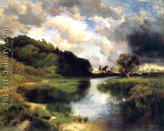

Pesachim 12 - When one finally stops eating chametz?
We learned before that it is prohibited to eat chametz (bread) already in the middle of the day before Passover . However, the Sages moved this time a little earlier, out of concern that the people won’t be precise with timing.
Rabbi Meir says that it is easy to tell midday by the sun. He, therefore, asks to stop eating chametz an hour before noon, and requires all to start burning it in the sixth hour of the day. However, Rabbi Yehudah considers that on a cloudy day one may make a bigger mistake in estimating the time. He, therefore, permits eating chametz for four hours of the day, requires to refrain from eating it in the fifth hour, and to burn it in the sixth.
Art: Cloudy Day At Amagansett by Thomas Moran